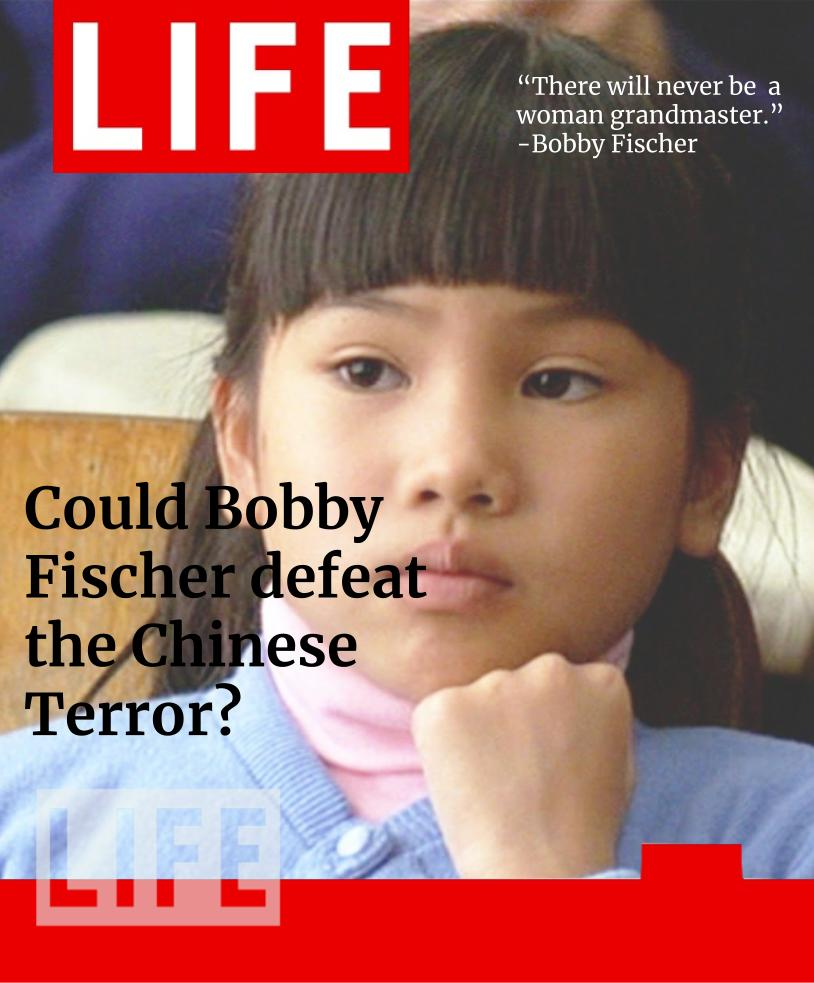

It was March 14th, 1960, 3 days until my 9th birthday. I was also considered as a national champion, only 429 points away from being a Chess Grandmaster. People called me the Great American Hope. A child prodigy.
I remember that day the picture of me for the magazine. The magazine that would eventually ruin my life. I played in the auditorium of one of the largest high schools in the North San Francisco area. I remember the echo of phlegmy coughs, the squeaks of the rubber knobs of chair legs against the waxed floor.
And I remember the look on my opponent’s face. He was American, easily over four times my size. He was about the same age as Lau Po. Every time I made my move, it looked like he might cry. He was sweating before our 7th move.
I thought back to that morning, where my mom said that a photographer for Life Magazine would be there, taking pictures for the chess special edition magazine. She made sure I wore the pink and white dress that she sewed for me for this special occasion. She taught me how to sit correctly, posing for the camera without looking like you are posing for the camera.
I knew the game was over. He did not see it. A classic finisher move, trapping the king within two castles and a bishop. I sat up straight, moved my castle to e4, flipped my clock, and said with a confident smile on my face, “Checkmate.” I saw a flashing light, then the camera shutter followed. I looked over to my mother, who gave me a nod and a smile back.
 The Joy Luck ClubLater that night, my mother took me, my father, and my brothers out to a restaurant. The whole way, she would walk up to random strangers, almost yelling into their faces, “My daughter is a chess champion!” or “She is in Life Magazine!” I wanted to shield my face, run away from all the attention, but it was impossible to escape my mother’s iron grip.
During dinner, she told every waiter and waitress who walked by our table about my success. By the end of the night, I was ready to lash out at her, the anger building up inside me. But I kept it in.
Everywhere I went with my mother, she would go up to everyone, and I mean everyone, and tell them about her prodigy daughter, her intelligent, wonderful child.
One day, I could not keep it in anymore. I did not want to be shown off. I did not ask for this; all I wanted was to play the game I loved in the middle of a busy street on a Saturday afternoon. I screamed at her, “Why do you have to use me to show off? If you want to show off, then why don’t you learn how to play chess”(Tan 101)? Then I ran, crashing into old ladies, knocking over signs. I was done, done with my mother using me. Done with chess.